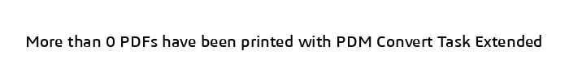

PDM Convert Task Extended
Thank you for choosing PDM Convert Task Extended!
PDM Convert Task Extended is a SOLIDWORKS PDM task add-in that lets you save your SOLIDWORKS files using advanced filters and provides power capabilities to place custom properties/datacard, BOM quantities on PDFs and merge them.
Requirements
The minimum version PDM Convert Task Extended supports is SOLIDWORKS PDM Professional 2018 SP0.
Tip
We highly recommend you use the latest version of PDM Professional.
Support
For additional support, please contact us through the contact page.
Note
Before reaching out, we highly suggest you read the content of this page. We have compiled these help topics to respond to the frequently asked questions by our customers.
